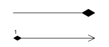
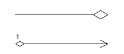

- private
# protected
+ public
~ package
Klassendiagramme werden zum Beispiel häufig von Software-Ingenieuren genutzt, um die Software-Architektur zu dokumentieren. Es handelt sich um eine Art Strukturdiagramm, denn es beschreibt, was das modellierte System enthalten muss.
Die Klassenform an sich besteht aus einem Rechteck mit drei Reihen. Die oberste Reihe enthält den Namen der Klasse, die mittlere Reihe gibt ihre Attribute an, und die unterste Reihe gibt Aufschluss über die Methoden oder Abläufe innerhalb der Klasse. Klassen und Unterklassen werden gruppiert, um die statische Beziehung zwischen den einzelnen Objekten zu verdeutlichen.
|
Attribute
- private
|
Die Klasse ist dreigeteilt in Klassennamen, Eigenschaften und Methoden |
|  | Komposition | Beziehung zwischen zwei Klassen, bei der das Ganze die Teile enthält |
|  | Aggregation | Beziehung zwischen Klassen, die beschreibt, wie sich ein Ganzes aus seinen Teilen zusammensetzt |